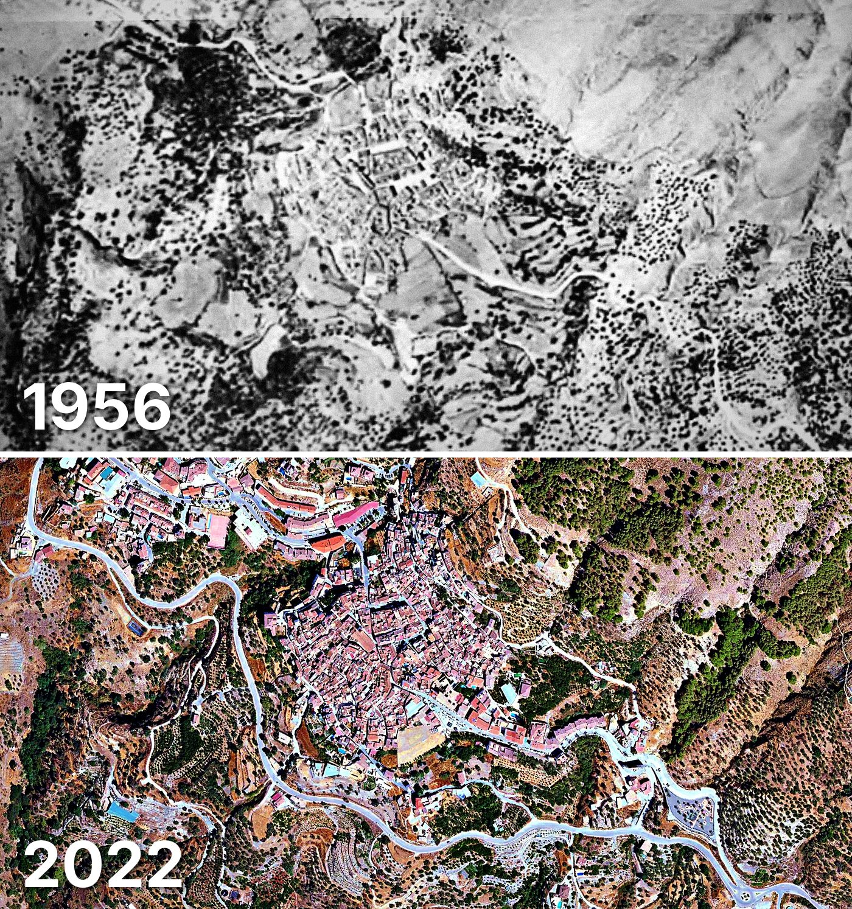

Canillas de Aceituno
Canillas de Aceituno tiene 1.237 edificios y 1.381 viviendas, y 1.801 habitantes en 2025. Al menos la mitad de sus edificios ya estaba en pie en 1956.
Cuándo se construyeron sus edificios
Desde 2015 se han terminado 13 edificios.

Las calles de Canillas de Aceituno con más viviendas
- Calle Convento · 40 viviendas
- Calle Huertezuelo · 38 viviendas
- Calle Agua · 37 viviendas
- Calle Estación · 35 viviendas
- Calle Camino del Nícar · 31 viviendas
- Calle Alta · 30 viviendas
- Calle Llanillo · 30 viviendas
- Calle Parras · 30 viviendas
- Calle Ejido · 29 viviendas
Toda la información de Canillas de Aceituno en CASAS.ES →
Fotos de Canillas de Aceituno para publicar
Estas fotos aéreas de Canillas de Aceituno, de 1956 y de 2022, se pueden publicar gratis en un periódico, un blog, la web del ayuntamiento o las redes, citando la fuente como se indica debajo.

Descargar: las dos juntas · 1956 · 2022 (JPG, 1.400 px de ancho)


Texto listo para publicar
Canillas de Aceituno desde el aire: así era en 1956 y así es en 2022
Las dos fotos muestran el mismo encuadre de Canillas de Aceituno con 66 años de diferencia: arriba, el Vuelo Americano de 1956; abajo, la foto aérea del PNOA de septiembre de 2022. Hoy Canillas de Aceituno tiene 1.237 edificios y 1.381 viviendas, y 1.801 habitantes en 2025. La mitad de sus edificios es de 1945 o posterior. El 65 % de sus edificios ya estaba en pie antes de 1960.
Más datos de Canillas de Aceituno en CASAS.ES: casas.es/malaga/canillas-de-aceituno
Cita para copiar
Fotos: Vuelo Americano Serie B (1956-57) y PNOA 2022, cedidos por © Instituto Geográfico Nacional (CC BY 4.0, scne.es). Datos y composición: <a href="https://casas.es/malaga/canillas-de-aceituno/">los datos de Canillas de Aceituno en CASAS.ES</a>Descarga: municipios (CSV) · calles (CSV) · Wikidata (Q1647722) · cómo usarlos en Python (dev.to) · también en OSF, Figshare, B2SHARE y Mendeley Data